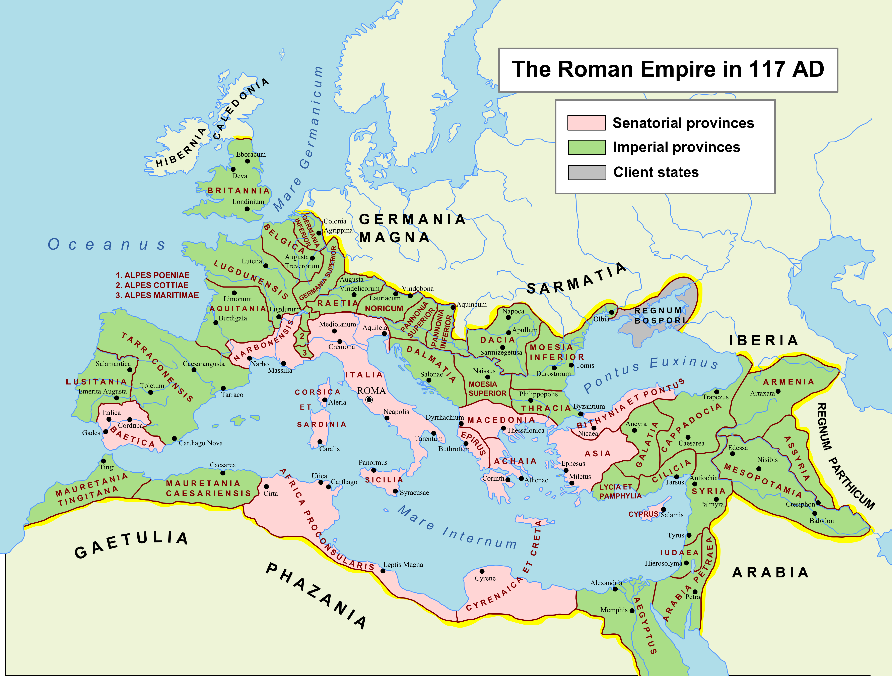

不懂系统之地名前缀(一)
文章目录
今天把如今欧洲版图上的44个国家国名由来查阅了许久，积累的知识量太浅，我只好临时多补充能量。
本篇只谈欧洲（国家）地名，要把这个掰扯清楚，逻辑非常重要。我有想过从地理位置分别漫谈，比如从四大半岛谈，也有想过从民族变迁的角度来分析，如凯尔特人、日耳曼人、斯拉夫人等是怎么建城立国。反正思路好杂，但不管哪条线讲欧洲国家由来，都是单薄的；干脆来个多条线综合理解吧，慢慢写，慢慢改。
思路： 找到欧史上关键的”时期，比如马其顿帝国时期、罗马帝国时期等，拉出当时的版图溜溜，看民族、宗教的情况，了解当时的各城邦、或行省、或区域等所谓的“代号”是不是熟悉的味道。
题外话： 民族、政府、国家、部落、联邦……好希望我是位社会学家，把这些概念间的千丝万缕关联都能识别、理解。
诺给我翻出《枪炮、病菌与钢铁》，指出有一节对社会的类型做出不同角度的分类：
政府和宗教的扩张在整个有文字记载的历史上一直就是这样相互联系在一起的，不管这种扩张是以和平手段实现的，还是以暴力手段实现的。就后一种情况来说，通常都是由政府来组织征服，然后再由宗教来为这种征服辩护。虽然游牧民族和部落民族偶尔也打败过有组织的政府和宗教，但在过去的30000年中，总的趋势是：失败的还是游牧民族和部落民族。
1、马其顿帝国
希腊文明最初的启蒙在克里斯岛Crete，经过漫长漫长的历程，希腊文明在浸蕴于爱琴海的群岛中繁衍，直至不愿偏安一隅的亚历山大大帝横空出世，将希腊文明播种到亚非欧的大片土地。 虽天妒英才，在征战9年后（公元前334年春-公元前323年夏）英魂消殒，但传奇两千多年到如今，还将永远是世人心中的Alexander “the Great”。
 图1. 323B.C. 马其顿帝国
图1. 323B.C. 马其顿帝国
亚历山大逝后，原本拓展的帝国（图1紫红色区域）分裂，形成三足鼎立之势。 其中，安提柯王朝The Antigonid dynasty统治着马其顿欧洲部分，塞琉卡斯帝国The Seleucid Empire占据着之前波斯帝国的大部分国土，托勒密王朝The Ptolemaic Kingdom踞非洲埃及。
自马其顿帝国从公元前323年一分为三，继承者们各自为政，希腊文明由盛逐渐转衰。 同时地中海其他城邦、王国已经静默地崛起壮大起来，从公元前218年的欧洲格局可见一斑（图2）。
沿地中海区域战乱不断，亚平宁半岛的城邦在地中海贸易中逐渐形成，并且联合为初期的古罗马；迦太基Carthage向南地中海扩张，殖民到伊比利亚半岛上的部落Iberian tribes。古迦太基与古罗马多次交锋，接连暴发三次布匿战争，岛东岸的叙拉古Syracuse在希腊、罗马、迦太基之间摇摆，在公元前212年被罗马人征服，自此罗马掌握了地中海霸权。
不仅有强盛的罗马联邦、迦太基人的崛起威胁，欧洲北边邻居们伊里利亚人Illyrians、色雷斯Thracians依然长期骚扰希腊；而在西方和遥远的北方，仍然是部落状态的社会组织，被“文明社会”称为**“蛮族”**： 高卢部落Gallic tribes、凯尔特部落Celtic tribes、日耳曼部落Germanic tribes、斯拉夫部落Slavic tribes。 这些蛮族不定时扰乱地中海北岸，文明与野蛮摩擦着火花。
简单叨了后马其顿帝国的历史，附上版图，对比21世纪欧洲，因两种社会结构是不同的，城邦/联盟VS城市/国家，单看欧洲的地名，大部分已经归尘土，另一部分城邦传承历史成为古城，比如雅典Athens、罗马Rome，但古今的影响力却大相径庭。 有些是现在的国家，而几千年前这些是民族或文化的称呼，这里将两个现在的国家列出来，趣谈差异。
希腊 Greek： 在公元前218年，希腊是广义上文化的概念， 古希腊 Ancient Greece 是指被希腊文化殖民的城市、城邦、地区、王国，在图2上看马其顿帝国分裂后的三个王国、伯罗奔尼撒半岛，以及半岛北部区域，都是古希腊的“领土”。 而在当代，希腊演变为狭义上国家的概念，现代希腊 Modern Greece 特指爱琴海畔的蓝色浪漫的国家。 古希腊 Ancient Greece 在很多英文文献中称为Hellence，这是特指希腊化希腊时期（马其顿帝国形成时到罗马占领希腊时）的希腊。
罗马 Rome： 在公元前218年，罗马是联邦（城邦国家），加入联邦就是罗马共和国 The Roman Republic 的成员，随着罗马军事实力的强大，有主动加入联邦的，也有被动纳入联邦的，此时，罗马共和国疆域不断扩大，最终扩张为巨无霸罗马帝国 The Rome Empire。 而在当代，罗马仅是城市，意大利共和国 Italian Republic 的首都。 如果用疆域比较，缩水不止千倍，sighhh~
马其顿 Macedonia： 与希腊、罗马的命运相同，马其顿在历史上定义变迁N次。 在公元323年，昙花一现地盛极欧亚非，称呼为马其顿王国 The Kingdom of Macedon；而百年后，沦落为罗马的马其顿行省 The Roman Province of Macedonia。 再后来拜占庭时代、奥斯曼时代、直到现代，马其顿随不同社会背景变幻着自己的定义、疆域，唯一不变的，也许是马其顿人的个性。
此马其顿帝国非彼“马其顿”共和国，而此罗马共和国也非彼罗马帝国。
此一时，彼一时，是人类在进步吗？还是人类永远是愚蠢的？
2、罗马帝国
东地中海的希腊文明通过和平传播、野蛮同化孕育出西地中海的文化和文明。 随着古罗马从公元前9世纪走向公元前5世纪的罗马共和国，再经过三次布匿战争占领迦太基在欧洲以及地中海的领地，又历经四次马其顿战争征服希腊。在胜利面前，罗马战士没有停止征战的步伐，在凯撒、庞培、克拉苏引领下，保卫西亚，侵略不列颠Britannia，并将高卢地区Gallia揽至麾下。
至此，凯撒大帝 Julius Caesar 将罗马共和国的疆土拓展到欧亚非（图3亮黄区域），成为实实在在的地中海霸主。
可惜，凯撒大帝的步伐止于公元前44年的暗杀，幸而他后继有养子屋大维 Octavian（呃，后来被授予尊称“奥古斯都” Augustus ）继续他未竟之扩张大业。
屋大维勤勤恳恳改革罗马共和国，在公元前27年被授予奥古斯都称号，罗马帝国象征性成立。 他将罗马内部的矛盾化解后，致力将庞大帝国稳定繁荣，所以他并未对外过多开疆拓土，在他即将临终时，帝国疆域向外扩张部分为图4中三份绿色部分。 其中，与埃及艳后的爱情让他获得埃及的领地，爱情力量好伟大^_^
 图4. 14年 罗马帝国
图4. 14年 罗马帝国
面对庞大的领土，奥古斯都继续使用“行省”制度管理，并加以改进，将行省分为元首直辖Imperial provinces、元老院直辖Senatorial provinces两类，如此这般的社会管理结构一直影响至今，省Province依然是很重要的一级行政单位。
从奥古斯都之后至此直至300年，虽然内战不断，管理权不断易主，但罗马帝国的行省在跌跌撞撞中并未有过多变化。
下面用117年较稳定时局的罗马帝国行省展开，很多演进为如今欧洲的国家，当然历经了将近两千年心路。
 图5. 117年 罗马帝国
从地中海上散落的明珠开始盘点，有5个海岛，包含在4个行省中。
西西里Sicilia： 就是那颗三角形的小岛。罗马第一个行省，战略意义很大。虽然几千年来战火不断席卷这片地中海明珠，但有一位女人莫尼卡·贝鲁奇 ，让全世界都对美丽的西西里神驰向往。
科西嘉岛和撒丁岛Corsica et Sardinia： 意大利西面地中海上手牵手的两个小岛。靠北的是1500年后鼎鼎大名的囚困拿破仑的科西嘉岛，诶，现在她是法属海岛。
昔兰尼加和克里特岛Cyrenaica et Creta： 这个也好找，克里特岛，就是漂浮在东地中海横居于欧非之间的小岛，是联结埃及文明和希腊文明的纽带。
塞浦路斯Cyprus： 在克里特岛南的海岛，是地中海进入西亚的要塞，自公元前10世纪就有人类活动，先后被各路“土匪”（埃及、波斯、希腊、罗马等等）占领，至今仍然因岛上的两个不同民族（希腊裔塞浦路斯人、土耳其裔塞浦路斯人）而分为南北塞浦路斯。
再把现在的亚洲小亚细亚区域行省数一数。 亚细亚Asia： 这个词，行政意义从罗马时期的爱琴海东岸海岸线区域（希腊语 Ἀσία，意思为东方），发展衍生为指代整个亚洲大陆，因此原本的区域现在称为小亚细亚 Asia Minor。
阿拉比亚Arabia Petraea： 图拉真在106年统治此地，现在主要是约旦的领土。
犹太行省Iudaea： 圣城耶路撒冷所在地，因宗教而伟大，也因宗教而荒乱。 图5所示的117年，犹太行省初建，但是犹太人顽强反对罗马政府，导致在135年罗马拆除耶路撒冷圣殿，犹太民族被驱逐出境，往天涯流落他乡。Indaea在历史上消失，巴勒斯坦 Palestine 诞生。历史太过冷酷，如今的犹太人国家以色列与巴勒斯坦依然冲突不断，弱者总是受伤的，可哪有永远的胜利哪有永远的失败？！
叙利亚Syria： 从亚历山大大帝征服亚述人的地盘后，将美索不达米亚平原东部地区的亚述人 Assyrians 称为叙利亚人Syrians，罗马共和国乃至现代的叙利亚，一直沿用Syria的称谓。
小亚细亚半岛其他行省Bithynia et Pontus、Lycia et Pamphylia、Galatia、Cappadocia，以及亚美尼亚Armenia、亚述Assyria、还有杰伦《爱在西元前》的美索不达米亚Mesopotamia，随征战风云变幻名字，不变的是人民面对战争的苦难和颠沛流离。
地中海的南岸，如今非洲大地，不同的行省，一样的斗争。
埃及行省Aegyptus： 来源于希腊神话中埃及国王Aegyptus（希腊语 Αἴγυπτος），用此命名埃及，英语为Egypt。
非洲地方总督区Africa Proconsularis： 这个行省是原迦太基的大本营，现在的突尼斯在行省海湾中，距西西里岛非常近。因为盘踞在非洲的地中海海岸线，将这命名为非洲辖区也是合理。
另外两个行省是Mauretania Caesariensis、Mauretania Tingitana，海港优势能控制贸易从中牟利。
接下来继续顺时针看地图，伊比利亚半岛，幸而半岛整体局势比较明朗，仅划分3个行省。
贝提卡Baetica： 同样属于元老院辖区，西班牙南部区域，把持着地中海出海口直布罗陀海峡，行省Baetica是因一条美丽的河Betis而得名。
卢西塔尼亚Lusitania： 在民族的凝聚下，将卢西塔尼来人部落划分为单独的行省，词源可能源于罗马神话人物Lusus，现在大部分归属于葡萄牙。
塔拉科Tarraconensis： 如今西班牙的绝大地盘。
高卢地区眼花缭乱，等看明白再写。接着瞅瞅沿地中海的行省以及亚平宁半岛的意大利。
纳博讷Narbonensis： 如今南法区域，海边城市马赛Massilia在历史上多次易主，东边就是阿尔卑斯山，隔开了意大利和高卢，纳博讷省的战略地位可以简称为得马赛即可得高卢。
阿尔卑斯山脉三行省Alpes Poeniae、Alpes Cottiae、Alpes Maritimae： 在意大利和高卢地区之间的阿尔卑斯山脉，有沿海道路、有丰富的资源，罗马将此段山脉分三段进行管理。
意大利Italia： 在罗马帝国时期，将阿尔卑斯山脉将亚平宁半岛与北方蛮族隔开，形成天然屏障。希腊文明冉冉之期，希腊人用Víteliú 称呼半岛南部区域，意为“[land] of young cattle”，类似于放牧之地。渐渐随罗马扩张，Italia已经指代整个半岛区域。
拉埃提亚Raetia、诺里库姆Noricum： 罗马人用武力占领阿尔卑斯山南部及多瑙河北岸地区，根据南北划分为两个行省，西部拉埃提亚人居住的地方划为拉埃提亚，东部就是诺里库姆。大致的方位是现在的多个国家（德国、瑞士、奥地利、意大利）领土里。
最后到了已经没落的希腊文明区域，巴尔干半岛及北部区域。
马其顿Macedonia： 关于马其顿名字的由来，充满了神话色彩。在这个神话中，希腊人与马其顿人是表兄弟，参考毕国华的文章，很有趣。可惜现在的希马，因为区区国名问题十几年打打闹闹，马其顿北共和国、北马其顿共和国，只是个代号而已，难道需要用硝烟定名字吗？（诺说，名字一旦有政治寓意，就可能在不同政派心中有不同解读，比如南中国海和中国南海）
色雷斯Thracia： 对这个名字太熟了，斯巴达克斯就是色雷斯人，从此处被奴役到罗马从事角斗士职业，领导了斯巴达克斯起义。由此可见罗马帝国的腐化，以及分裂的必然性。
Athaia/Achaea、Eprurs： 这些区域相当于在当今希腊南部，分分合合。不提也罢。
上、下潘诺尼亚Pannonia Superior、Pannonia Inferior： 又是图拉真国王的政绩，现如今的区域分裂到了五、六个国家里，就是克罗地亚（有诺喜欢的格子军团）、斯洛文尼亚这一带。
上、下默西亚Moesia Superior、Moesia Inferior： 默西人的地盘，盘子也大，需要内部再细分，不走心地用Superior、Inferior来区别。
Dacia、Dalmatia： 已经风化为很多欧洲小国，不叙。
文中图片资源，参考： https://www.worldhistorymaps.info/ https://en.wikipedia.org/wiki/